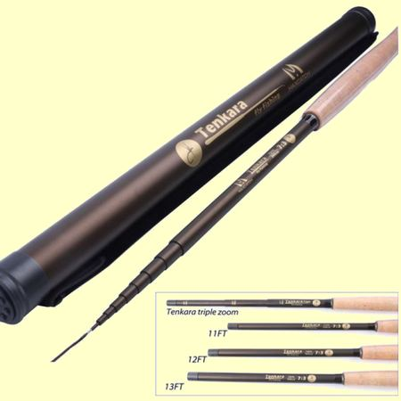
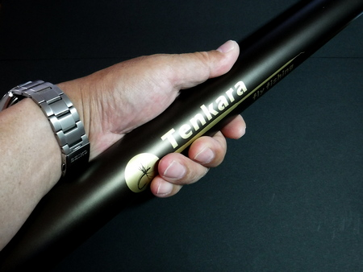
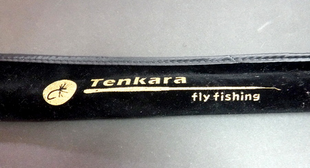
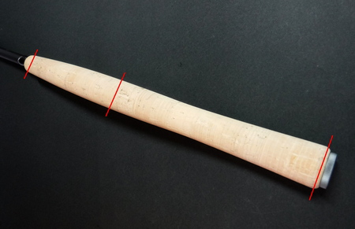
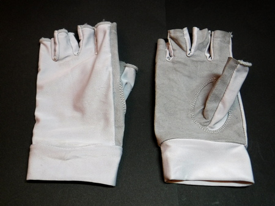
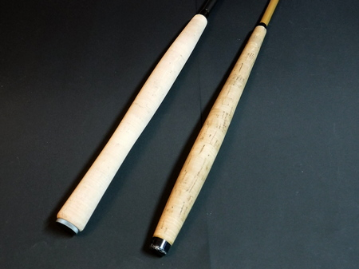

私のお気に入り
MaxCatch社 テンカラ竿 Tenkara Frosted (11ft, 3.3m)
2020年の10月に、ニジマス釣り場に出かけた。昔ながらの竹の延べ竿を貸してくれて、練り餌で釣る方式である。
事前に管理人さんに問い合わせたら、延べ竿・振出し竿だったら、毛鉤を使ってもいいよ！ と言ってくれたので、学生の頃に買ったテンカラ竿で勝負した。
ところが。 釣り堀のニジマスだと思ってなめてかかったら、ずいぶんと賢く、スレており、10時に始めて３時過ぎまで粘る羽目になった。
そこで、次なる挑戦に備えて、「現代」のテンカラ竿を新調することにした。ニゴイ用スピニングロッド、８番のフライロッドに続き、またしてもコストパフォーマンスに優れた MaxCatch社製のテンカラ竿を購入し、再度そこに行って使用したので、レビュー記事を書いてみた。

基本情報
テンカラ竿（振り出し式）
モデル名
Tenkara Frosted Fly Fishing Rod (11FT, 3.3m)
購入方法、購入時の価格
MaxCatch社ウェブサイトより、PayPal 利用にて購入。
2021/04/13時点での価格は 45.00 US$（約4,950円）
通常配送を指定したので、配送料は無料。注文から到着までは10日ほどであった。
スペック・特長
（メーカーウェブサイトの製品説明ページ
より英文を作者が拙訳）
- 独自のマックススパイラル II ブランクテクノロジー
ブランクには純粋なIM8 30Tカーボンファイバーを使用しています。ブランクの水平方向を補強するUGGカーボンレイヤーを含む５層の異なるカーボンレイヤーは、竿の強度とプレゼンテーション能力の20% アップを実現しています。- プログレッシブなテーパーデザインと 7:3 調子
超軽量でありながら、強度は全く損なわれていません。小さな魚とのやりとりにおける楽しさを提供しながら、大物が掛かった時のファイトにも充分な強さが備わっています。- 握り心地の良い AAA 品質のコルクハンドルとスイベル付きの穂先
手に馴染むコルクハンドルはキャスティング時の操作性を向上させ、スイベルティップはラインの絡みを防ぎます。- バックパッキングに好適
仕舞寸法は約54cm、バックパックに楽に入り持ち運ぶことができます。また、小渓流でのフライロッドのバックアップとしても最適です。- １年保証と生涯修理保証
Maxcatchは16年の歴史を持つフライロッドメーカーであり、すべてのロッドに１年間の「面倒な手続きなし」の保証を提供しています。もし100％満足できない場合は、いつでも返品が可能です。また、Maxcatchのロッドには生涯修理を提供しています。
このモデルのラインナップ、および付属品
- 竿の長さは、3.0, 3.3, 3.6, 3.9m、（10, 11, 12, 13ft）
トリプルズームモデルもページに載っていたが、2021/07 現在は在庫切れのようである。モデル名の"Frosted" がどんな意味なのか、恥ずかしながらわからなかったので辞書を引いたところ「艶消し」という意味のようだ。確かに竿の仕上げは艶消しの濃い茶色である。 - なぜ 3.3m を選んだかと言えば、昔愛用していたカーボン製テンカラ竿が 3.2m だったこと。
そして釣友の岡田君が新潟の山岳渓流でダイワ製の 3.6m を使ったところ、「ちょっと長くて持て余した」と語っていたことによる。 - 黒色に金文字でロゴの入った長さ60.5cm、径3.8cm のカーボン製ロッドケース（重量 194g）と、同じデザインの柔らかい風合いのコットン製竿袋が付属している。

カーボン製ロッドケース
コットン製竿袋 - 竿、布袋、ロッドケースの合計重量は、293g であった。
ここで、このモデル：Tenkara Frosted Fly Fishing Rodとほぼ同じ長さで、私が実際に使ったことがあり、現在も保有している、1983年に東京のつるや釣具店で購入し長く愛用した「てんから蒼石」という竿、1982年に私が最初に購入した SAKURAブランド：櫻井釣漁具製の「せきれい」というグラス竿余談-１とも比較して表にまとめた。さらに、同価格帯の他の製品とも比較した。
加えて、ダイワ、シマノ、がまかつ、テンリュウ などの国内大手メーカーが出している、長さが同等のテンカラ竿とも比較してみた。だいぶ高価になるが.....
- (株)浜田商会 プロマリン 極光テンカラ 330
- 大橋漁具(株) 下野(シモツケ) 魚釣三昧 三代目てんから兄弟 3.3
- アルファタックル プレミアムセンサー テンカラ 超飛 330
- (株)プロックス 剣峰てんからSE 33
- 櫻井釣漁具 金剛 せきれい（現行モデル）
- DAIWA テンカラＸ
- Shimano 天平(てんぴょう) テンカラ NB LLS33
- Gamakatsu マルチフレックス テンカラ水舞EX 4.0
- （株）天龍 風来坊 TF39TA
| モデル名 | メーカー | ブランド | 全長 (m) | 継数 | 仕舞寸法 (cm) | 自重 (g) |
|---|---|---|---|---|---|---|
| Tenkara Frosted | MaxCatch | MaxCatch | 3.3 | 6 | 54 | 88 |
| てんから蒼石 | つるや釣具店 | 3.2 | 7 | 57 | 64 | |
| せきれい | 櫻井釣漁具 | SAKURA | 2.7 | 5 | 66 | 87 |
| 極光テンカラ 330 | (株)浜田商会 | プロマリン | 3.3 | 8 | 48 | 73 |
| 魚釣三昧 三代目てんから兄弟 3.3 | 大橋漁具(株) | SHIMOTSUKE | 3.3 | 8 | 52 | 80 |
| プレミアムセンサー テンカラ 超飛 330 |
アルファタックル | 3.3 | 8 | 50 | 75 | |
| 剣峰てんからSE 33 | (株)プロックス | 3.3 | 8 | 51 | 68 | |
| 金剛 せきれい （現行モデル：カーボン製） |
櫻井釣漁具 | SAKURA | 3.3 | 7 | 58.5 | 65 |
| テンカラＸ | DAIWA | DAIWA | 3.33 | 9 | 46 | 88 |
| 天平(てんぴょう) テンカラ NB LLS33 |
Shimano | Shimano | 3.26 | 8 | 48.5 | 65 |
| マルチフレックス テンカラ水舞EX 4.0 |
Gamakatsu | Gamakatsu | 4.0 | 8 | 60.5 | 105 |
| 風来坊 TF39TA | （株）天龍 | TENRYU | 3.3 - 3.9 ズーム |
14 | 34 | 77 |
| モデル名 | 重心位置と モーメント ※ |
穂先径/元径（mm) | 調子 | カーボン 含有率 (%) |
税込み価格 （送料別） |
備考 |
|---|---|---|---|---|---|---|
| Tenkara Frosted Fly Fishing Rod | 63.5 / 5.59 | 1.1 / 11.4 | 7:3 | 不明 | 4,950円 ※送料無料 | 布袋・カーボンケース付属 |
| てんから蒼石 | 68 / 4.35 | 0.9 / 10.5 | 6:4 | 不明 | 12,000円 (1983年当時） | 布袋付属 |
| せきれい | 83 / 7.22 | 1.2 / 11.1 | 6:4 | グラス | 不明 | 布袋付属 |
| 極光テンカラ 330 | 54 / 3.9 | 0.7 / 11.0 | 7:3 | 98 | 4,936円 | プラケース |
| 魚釣三昧 三代目てんから兄弟 3.3 | 不明 | 0.8 / 11.3 | 不明 | 97 | 4,980円 | 不明 |
| プレミアムセンサー テンカラ 超飛 330 |
56 / 4.2 | 0.8 / 11.4 | 6.5:3.5 | 97 | 4,790円 | なし |
| 剣峰てんからSE 33 | 不明 | 0.8 / 11.5 | 7:3 | 98 | 4,928円 | ローラートップ付き |
| 金剛 せきれい （現行モデル：カーボン製） |
不明 | 不明 | 6:4 | 不明 | 30,580 | 本桐製グリップ 布袋付属 |
| テンカラＸ | 不明 | 0.8 / 12.9 | 不明 | 85 | 14,850 | ソリッドティップ 回転式からまん穂先 |
| 天平(てんぴょう) テンカラ NB LLS33 |
不明 | 1.0 / 10.2 | 6:4 | 92 | 19,800 | チューブラー穂先 布袋付属 |
| マルチフレックス テンカラ水舞EX 4.0 |
77.6 / 6.6 | 0.9 / 13.5 | 不明 | 98.9 | 46,200 | からみ防止穂先 布袋付属 |
| 風来坊 TF39TA 各データは 3.3m の場合 |
61 / 4.7 | 0.8 / 15.5 | 6:4 | 83 | 62,700 | 回転リリアン穂先 布袋・内袋付属 |
※ 重心位置は、竿を伸ばし、人差し指でバランスを取って
水平に釣り合った点を、竿尻からの長さ（cm）で計った。
※ モーメント=自重（kg）×竿尻から重心までの長さ（cm）
参考資料
がまかつ社 公式サイト がま渓流 テンカラ水舞EX
がまかつ社が自社の竿の「持ち重り」を表すために、「モーメント」という指標を使っていることは、アメリカのテンカラ専門のウェブサイト、Teton Tenkara の
Swing-Weight という記事で知った。
その記事では、各社のテンカラロッドについて、詳細に調べられていた。
さらに、TenkaraBum というサイトの、あるテンカラ竿のレビュー記事では、
ある竿のモーメントが 6.0 以下なら許容範囲、5.5 ならばとても良い。
と解説されていた。
※ 各製品とも、価格は、価格コムにおける実売価格（2021/07時点）
Maxcatch Tenkara Frosted を使用しての感想
- 第一印象
・通常配送無料にもかかわらず、意外と早く中国から届いた。梱包もしっかりしていた。
・軽く、丈夫そうなロッドケースと、質の良い竿袋が付属しており、感心した。
- 良い点
・振った時の軽さ
この Tenkara Frosted という竿は、自重は 88g と、飛び抜けて軽いわけではないが、重心位置は、竿尻から 63.5cm で前述の「モーメント」という指標が 5.59 であり、とても軽く感じられて、持ち重り感が無い。
永く使っていて、『軽い竿だなぁ』と感心しているつるや釣具店オリジナルの「てんから蒼石」がモーメント値が 4.35 であることを思うと、Tenkara Frosted もかなりいい線を行っている。・ラインの振りやすさ
Fujino(フジノ)製、ソフトテンカラ 3.3m（ナイロン100%のテーパーライン、重量 0.74g）、
自作のテーパーライン 3.2m、（重量 0.96g）
を用いて、ハリス（リーダー）にナイロン 1.5号、約1.7m を足して釣ったところ、非常に振りやすく、ラインも思った所へ心地良く伸びた。
参考までに、フロロカーボン製のレベルライン ４号の 3.3m あたりの重量は、約 0.5g である。（標準直径 0.33mm、比重 1.78 として）・感度の良さ、しなやかさ
まだニジマス釣り場で１回しか使用していないが、25cm クラスのニジマスが掛かった時に、メーカーの表示通り、確かに 7:3 の調子で曲がった。
竿のパワーはまだまだ余裕があり、太いハリスを使えば 50cm クラスの魚でも余裕で対応できそうである。
竿の感度も良く、走ったり、ジャンプしたりするニジマスの挙動を正確に感じられた。・竿のパワー
大型の魚相手でも十分余裕を持ってファイト出来そうなパワーがある。大型の魚が釣れる北海道在住の方や、北海道や海外への遠征を考えている人には良い選択肢となろう。ウェブページでは、11ft model: target for less than 17 inch fish（3.3m モデルは、43cm 以下の魚が対象）と表記されている。・仕上げの良さ
グリップのコルクの品質、ブランクの塗装、竿尻のネジの加工精度などを見ると、非常に丁寧に仕上げられている。・グリップの形状
グリップは、上端から1/3の位置で最も太い、ゆるやかな「ひょうたん型」に仕上げられている。

グリップの形状
上端部：直径 18.9mm、最も太い部分：直径 26.4mm、
竿尻：直径 26.4mm となっている。・価格
MaxCatch社の公式サイトより、PayPal 使用で購入すると、4,950円（通常送料無料、2021/04時点）であった。この価格は、製品の仕上がり、付属のロッドケース、布袋などを考慮するとお買い得で、非常にコストパフォーマンスが高い。
残念ながら、なぜかこの竿はアマゾンジャパンでは販売されていないので（2021/07時点）、MaxCatch社公式サイトから購入するしかない。さらに、公式サイトには、全6種のテンカラ竿が載っているので、より多くの選択肢がある。・１年保証と生涯修理の保証が付いている。
・とてもしっかりした作りのカーボン製ロッドケースと上質な布袋が付属している。布袋の開口部はマジックテープとなっており、紐よりも素早く開閉できる。
日本の大手メーカーのテンカラ竿では、税別 18,000円クラスの製品でも、竿袋しか付属していないことがある。この日本メーカーのテンカラ竿のラインナップでは、税別 26,400円クラスの竿から、ハードケースが付属するようになる。
また、別の日本のメーカーのテンカラ竿では、税別 30,000万円以上の価格でもハードケースが付属していない。
こうしたことを考えると、Tenkara Flosted は、竿自体の仕上がりと性能に加え、非常にコストパフォーマンスが高い製品だと言える。・MaxCatch 社公式サイトからテンカラ竿、フライロッドを購入すると、ちょっとしたオマケ、プレゼントがあるのがうれしい。このテンカラ竿は、他のアイテム、テンカラ用テーパーライン、フライライン、フックシャープナー、タングステンビーズヘッドなどと一緒に購入し、合計$93.79 USD（約10,274円）だったので、釣り用の手袋をサービスで送ってきてくれた。
ただ、この手袋は公式サイトには載っていない、オマケ専用の製品らしい。しかし、なかなかしっかりした手袋である。
釣り用の手袋をサービスで送ってきてくれた - 気になった点
・グリップが少々太いかな.....という気がする。作者はあまり手の大きい方ではないが、さほど気にならなかった。しかし、手の小さな人、女性、子供さんには少々太いと感じられるかもしれない。

「てんから蒼石」との比較
蒼石のグリップ 上端部：直径 15.3mm、
最も太い部分：直径 26.1mm・欧米を初めとする大型魚が釣れる世界市場をターゲットとしていると思われ、日本の渓流のヤマメ、アマゴ、イワナ相手では竿のパワーがあり余るかもしれない。
さらに、7:3 調子なので、細いハリス（リーダー）を使って、あまり強く合わせると、合わせ切れが起こる可能性がある。あるいは、十分太いハリスで 15cm くらいのヤマメ、イワナを強く合わせると、カツオの１本釣りのように水面からすっ飛んでくるかもしれない。（笑） - 耐久性
・まだ買ったばかりであるが、ぞんざいに扱わない限りは永く使えそうな製品である。買ってから 40年近くが経ったつるや釣具店の「てんから蒼石」でもまだ十分に使えるので、丁寧に扱ってしっかり手入れをすれば、竿という物は長持ちするのである。釣り具店、業界は困るであろうが。
- 改善の余地
・とてもしっかりしたカーボン製ロッドケースが付属しているが、作者の眼とアタマが悪いことに加え、上下両端が同じようなデザインなので、どちらが開口部のネジ式蓋なのかがわからない。（笑） しょうがないので、百円ショップで売っている、文房具の丸印カラーシールを貼ってわかるようにした。
・この Tenkara Flosted は、7:3 調子の竿としてはとても良く出来ており、改善して欲しい点は無い。ただ、作者としては、6:4 調子が好みなので、少し調子が胴に乗る感じのモデルも販売して欲しいところである。
- ユーザーフレンドリー
MaxCatch 社のカスタマーセンターとは、別の製品の件で、何度か英文メールにてやりとりをしたが、とても丁寧な対応だった。今では精度の高い DeepL などの翻訳サービスがあるので、英語あるいは中国語でも簡単にコミュニケーションが取れると思う。 - 他のユーザーのレビュー
MaxCatch 社 ウェブサイトの製品ページに寄せられた、ユーザーからのレビューを引用する。（訳文は作者）
・k氏、19/01/2018、価格に比べると良い竿です。まだ魚を釣っていませんが、これから釣るつもりです。
・H氏、06/03/2019、なぜアメリカ T社製ロッドの価格を払うのか???????? そうしてもMAXCATCHよりも良いものを得ることはできません!!!! 私はトリプルズームモデルでとても良い時間を過ごしたので、兄弟のためにもう１本を注文しました。9フィート（約 2.7m）のバージョンも持っていますが、とても素晴らしい出来で、この価格でこれ以上の竿は望めません。
・N氏、16/04/2018、素晴らしい！伝統的なテンカラロッドのうちで最高の製品です。販売会社を推薦します。
・J氏、26/03/2018、配送が早かったです。品質の高い商品だと思います。このロッドで釣りをするのが待ち遠しいです。
・G氏、14/03/2018、最高の販売会社です!!!
・K氏、24/01/2018、素晴らしい品質のロッドで、キャスティングがスムーズです。とても柔らかなティップで、小さな魚でもこのロッドを大きく曲げてくれるでしょう。
テンカラ竿選びの参考図書
テンカラで楽しんだニジマス釣り堀の一件で、思わず熱くなって、久しぶりにテンカラ釣りの面白さに目覚めてしまった。以来、古本を買ったり、図書館で借りて、さまざまな本を読んでみた。
非常に良く書かれているなと思った一冊が、堀江渓愚著 山と渓谷社刊 の「精鋭たちのテンカラ・テクニック」である。この本の中から、テンカラ竿選びに関する部分を、少し長いが引用させていただく。（p45～49）
一部、数値などを横書き・半角数字に直し、伊藤が大事だなと思ったところは太字で記した。
テンカラ竿
テンカラ竿は、水に浮くほど軽くて小さな毛鈎を、オモリなどは一切使わず、テーパーラインという重みのある先細りの道糸をムチのようにしなわせ、ここと思うポイントへ正確かつスムーズに飛ばすための重要な道具である。したがって、それなりの機能を備えた竿でなければならず、用途の違うものを代用するというわけにはいかない。
それなりの機能とは、
①軽く、
②持ち重りせず、
③張りのある胴調子で、
④丈夫な竿。
大きく分けてこの四点に絞られる。
また、これは完全に独断と偏見であるが、テンカラの醍醐味、面白さというのは、次々と現れるさまざまなポイントに、ピシッ、スパッと毛鉤を打ち込みながらテンポ良く遡行して行くところにあると思っているので、普通の渓流ならば、まず 3.3m で充分であると思う。
G社などでは、最も短いモデルが 4.0m から、というラインナップである。
下手の長竿（へたのながざお）
「下手の長糸上手の小糸」。
竿は長ければ有利とは限らない。釣りに未熟の頃は隣の花が赤く見え、遠くや対岸を狙いたくなって長い竿を振り回したくなるが、疲れを誘うだけで、小技がきかず早合わせもままならない。釣り竿はハリと反対、大は小を兼ねず小で大を兼ねさせる。
「長鞭（ちょうべん）馬腹に及ばず」
「杓子は耳掻きとならず」。
テンカラ竿の調子に関する解析方法 参考 https://www.tenkarabum.com/common-cents-database.html
結論
五つ星評価システムの実装
作者への連絡先を明記する
余談-１ SAKURA せきれい テンカラ竿にまつわる話題
余談-2 Maxcatch 社製品のお得な買い方
この記事を書いていて、アマゾンジャパンとMaxcatch 社のウェブサイトを調べてみた。Maxcatch Nexus というテンカラ竿が両サイトで販売されており、アマゾンでは、12ft（3.6m）モデルが￥13,200となっている。販売元は Maxcatch。
一方、Maxcatch 社のウェブサイトでは、同じ製品が、$79.99 のところ、ディスカウントで $65.99 （約\7,245）で売られている。（笑） Maxcatch さんもなかなか商売上手だなぁと思って感心したり驚いたりした。
もっともこの製品に限らず、同じ製品の販売価格がアマゾンジャパンとMaxcatch 社ウエブサイトでは、かなり違うことがままあるので、お急ぎでないかたは、Maxcatch のサイトから購入することをお勧めします。１例として、Maxcatch フライフィッシングチェストバッグ 軽量チェストパックという製品が、アマゾンでは ￥11,138、（販売元：あいうえおかか）、Maxcatch 社ウエブサイトでは、$29.99 のところ、ディスカウントで $17.80 （約\1,954）となっている。謎の出品者：販売店が、法外な値段を付けているようだ。同製品をサクラチェッカーで調べてみても、価格・製品：確認（35%）、ショップ情報/地域：安全（0%）、ショップ評価：安全（0%）と表示された。（2021/08/19現在）
海外メーカーの製品を購入する場合には、アマゾンジャパンだけでなく、一度、製造元の公式サイトもチェックすることを強くお勧めします。
私のお気に入り 目次へ
サイトマップ
ホームへ
お問い合わせ